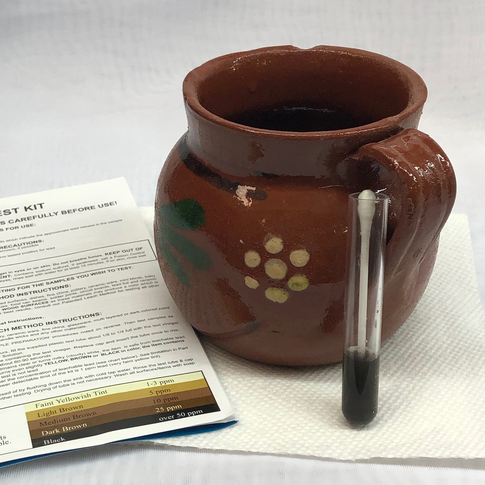

Lead Toxicology
Note: The CDC published a revised view of lead in 2012, so material on this page may be outdated. See the glossary entry for more information.
- Sources :
- The inorganic
compounds which are of concern in ceramics are :
- -basic lead carbonate 2PbCO3.Pb(OH)2,
- -lead frits, including lead-boro silicate.
- -lead oxides :
- -red (minium) Pb3O4 ,
- -yellow (litharge) PbO.
- Stability :
- I-Lead Carbonate :
- This product is unstable under the following conditions : when heated it decomposes at 400 degrees Celsius and emits lead monoxide, carbon monoxide and carbon dioxide.
- II-Lead Frits :
- In the relevant literature, we have not found any information relating to thermal breakdown products for the following lead frits: lead bisilicate, lead sesquisilicate and lead-boro-silicate.
- On the other hand lead silicate, PbO.SiO2, emits toxic lead fumes when heated to decomposition.
- III-Red Lead Oxide :
- This product is unstable under the following conditions : when heated to decomposition (more than 500 degrees Celsius), there is release of oxygene and emission of toxic lead fumes.
- IV-Yellow Lead Oxide :
- This product is unstable under the following conditions : when heated between 300 to 400 degrees Celsius, it is converted to lead tetroxide.
- Absorption :
- Inorganic lead is absorbed only by the respiratory and digestive tracts, except for metallic lead, which can penetrate the skin in a negligible way.
- Toxicological
Properties :
- I-Lead Toxicokinetics :
- A- Pulmonary
absorption :
- 1-Pulmonary absorption of lead depends on the size of particles; a small proportion of particles of size greater than 0,5 µm is retained at the pulmonary level. The retention of particles having a diameter smaller than 0,5 µm is inversely proportional to their size.
- 2-Pulmonary absorption also depends on respiratory frequency.
- 3- The pulmonary deposition rate of lead present in the air is approximately 30 to 50%.
- 4- Lead which penetrates deeply into the lungs is almost completely absorbed. The rest of lead particles which are found in the higher parts of the respiratory tract, are directed towards the gastro-intestinal system where they are ingested.
- 5-Lead does not accumulate in the respiratory tract.
- B-Gastrointestinal absorption :
- 1-Gastrointestinal absorption of lead varies according to the physiological state of the individual (fast, age) and the type of lead compound ingested. Thus, the rate of absorption may vary in the fasting adult from 5-15 % to 60-80 %. It is approximately 30 to 50 % in the child.
- 2-Absorption is influenced by the size of the ingested particles (the smallest being better absorbed).
- 3-Absorption of lead, which takes place in the duodenal region of the small intestine, seems to occur by a saturable mechanism.
- C-Distribution :
- 1-Pulmonary absorption of lead depends on the size of particles; a small proportion of particles of size greater than 0,5 µm is retained at the pulmonary level. The retention of particles having a diameter smaller than 0,5 µm is inversely proportional to their size.
- 1-Independently
from the route of absorption, absorpbed lead passes into the blood
circulation where more than 90 % finds itself bound to
erythrocytes (it is fixed especially inside the cell rather than
on the membrane). The remainder diffuses into the serum.
- 2-Studies undertaken in man indicate that absorbed lead is distributed primarily in 3 compartments: the first compartment is blood, the second is made up of soft tissues (central and peripheral nervous systems, liver, kidneys and muscles) and the third one is composed of bone tissue.
- a-Several researchers have proposed refinements to this kinetic model, it has thus been proposed to subdivide the blood compartment into 4 in order to better take into account lead kinetics in the plasma and in the erythrocytes. It is also proposed to subdivide the bone compartment into 2 in order to better reflect the speed of turnover and bone tissue metabolism.
- b-Thereafter a model was proposed taking into account the soft tissues with which the exchanges are fast and those with which they are slow.
- D-Metabolism :
- Lead is not metabolized in the body.
- E-Excretion
:
- 1- Ingested lead that is not absorbed is directly excreted in the feces.
- 2-Nearly 80 % of the absorbed lead is eliminated by the urinary tract, approximately 16 % is eliminated via the bile and the remainder is eliminated in the saliva, sweat, hair and nails.There are significant inter-individual variations in the capacity of lead elimination.
- F-Half-life :
- 1-In the adult, blood lead half-life is approximately 1 month.
- 2-The half-life in soft tissues (such as central and peripheral nervous systems, the liver, kidneys and muscles) is approximately 40 to 60 days.
- 3-The half-life in the bone compartment is approximately 20 to 30 years
- 4-The whole body lead half-life depends on the body burden, which itself is related to the duration of exposure of workers.
- II-Interaction :
- 1- Ingested lead that is not absorbed is directly excreted in the feces.
- Lead
toxicokinetics and toxicological effects can be affected by
interactions with certain essential elements and nutriments:
- A-The administration of calcium and phosphorus, at concentrations which can be found in an average meal, decreases lead gastrointestinal absorption by a factor of 6 in fasting adults.
- B-It would also seem that the daily intake of food fibers, thiamin and iron lowers blood lead level (BLL) in exposed workers.
- C-Lead absorption is reduced by a calcium or zinc intake, probably by a competitive mechanism at the intestinal level.
- D-Lead absorption is enhanced by the intake of food high in fat.
- III-Acute Intoxication :
- Acute
intoxication is rare in the work environment.
- The inhalation of significant lead amounts can cause digestive disorders (vomiting, epigastric and abdominal pain, diarrhoea and black stools), renal disorders, hemolytic anemia, neurological disorders (encephalopathy, intracranial hypertension, convulsive coma).
- IV-Chronic Intoxication :
- A-The effects of lead intoxication in man are the same whatever the route of entry into the body. They are generally described in terms of internal dose (amounts of lead in the blood ) rather than in terms of ambient level of
- exposure (mg/m³ or ppm).
- B-One of the first symptoms of lead exposure is the appearance of digestive disorders.
- This results in colics (intense abdominal pains, nausea, vomiting), constipation, anorexia and a loss of weight.
- C-Articular and muscular pains in the extremities are also reported.
- D- A blue coloured line has been observed on the gingival tissues of people exposed to significant lead concentrations.
- E-Lead exerts certain blood effects. It induces anemia (caused by a reduction in the lifespan of red cells and by a fall of the synthesis of heme by enzymatic inhibition). It also involves an increased production of abnormal erythrocytes.
- F-Lead has effects on the nervous system thus being able to cause encephalopathy and peripheral neuropathy.
- The first symptoms of encephalopathy can appear in the weeks following initial exposure to lead; these are irritability, lassitude, loss of appetite, reduction in the attention,headaches, jerked movements of the eyes, hallucinations, a deterioration of the cognitive functions (reduction in the performance in certain psychometric tests like, for example, eye-hand coordination, skills of verbal reasoning, memory, etc).
- Symptoms may worsen, sometimes abruptly, and one can observe delirium, convulsions, paralysis, coma and death. Peripheral neuropathy can result in muscular tremors, weakness of the upper limbs and paraesthesias of the lower limbs (pins and needles, tingling).
- G-Workers exposed to lead present an increased risk of chronic nephrotoxicity.
- The lead levels which can cause such an effect seem to be a function of the duration of exposure. A review of several studies seems to indicate that lead can cause nephropathy at blood lead levels as low as 1,93 µmol/l.
- Certain toxic effects are reversible whereas others are not. A recent study suggests that the exposure to low lead levels can cause renal problems in middle-age and old age men.
- H-Some studies suggest that there is a weak positive correlation between blood lead level (BLL) and an increase in blood pressure. However, it is currently premature to draw conclusions on this subject.
- I-There is some evidence that high lead doses could be responsible for cardiac lesions and disturbances in the electrocardiogram.
- J-According to some studies, lead could weaken the immune system.
- Biological Monitoring :
- I-Biological parameter, biological index of exposure and time of blood sampling :
A-Blood lead level (BLL):
- Variable according to different organizations, (time of blood sampling is discretionary); the ACGIH proposes 1,45 µmol/L (level aiming at minimizing or preventing the effects being able to result in a persistent functional damage);
- the WHO and Lauwerys propose 1,93 µmol/L (maximum tolerable blood lead level); the level in non-exposed individuals is < 0,50 µmol/L.
- B-Zinc protoporphyrins (ZPP) :
- The time of blood sampling must be at least one month after the beginning of exposure. Lauwerys proposes 0,67 µmol/L in order to prevent certain health effects. The level for non-exposed individuals is < 0,32 µmol/L.
- II-Other Exposure Indicators :
- Urinary aminolevulinic acid : an indicator of toxic effect; this test is less sensitive than the measurement of ZPP.
- III-Factors to be considered for interpretation :
- - these values apply only to exposures to metallic lead or inorganic salts.
- A-BLL
:
- 1-possibility of absorption by the digestive tract;
- 2-a BLL of about 2,42 µmol/L is expected in workers who are exposed, day after day, to lead air levels of 0,15 mg/m³ ;
- B-ZPP :
- 1-hemolytic anemia, iron deficiency (increased ZPP);
- 2-erythropoietic protoporphyria (increased ZPP); increased carboxyhemoglobin, if the analysis of ZPP is carried out by hematofluorometry (method used by the IRSST, Quebec), it involves an undervaluation of the concentration of ZPP.
- IV-Correlation between lead blood concentrations and their toxic effects :
- 1-possibility of absorption by the digestive tract;
Blood lead level (µmol/l)
Effect
< 0,48 Blood lead level of a nonexposed person
0,97 à 2,90 Increase in the concentration of erythrocyte protoporphyrins
> 1,93 Increase in the urinary concentration of coproporphyrin
2,41 à 2,90 Chronic encephalopathy in the child
> 3,86 Chronic encephalopathy in the adult
2,90 à 3,86 Peripheral neuropathy
3,38 à 4,80 Nephropathies
3,86 à 4,80 Anemia
3,86 à 14,5 Acute encephalopathy
- V-Conversion factor for blood lead level :
- µg/l x 0,004826 = µmol/l
- VI-Sensitive populations :
- A-People
suffering from a neurological dysfonction;
- B-People suffering from a renal disease;
- C-People having certain genetic diseases, such as thalassemia, glucose-6 phosphate dehydrogenase deficiency, porphyrias, an excessive activity of the ALA synthase.
- D-Children;
- E-Pregnant or breast-feeding women;
- F-The embryo or foetus;
- G-Elderlies;
- H-Smokers;
- I-Alcoholics.
- Carcinogenesis and Mutagenesis :
- I-Metallic Lead :
- B-People suffering from a renal disease;
- ACGIH evaluation
: Confirmed animal carcinogen (group A3).
- II-Basic lead carbonate, yellow and red lead oxide :
- IARC.evaluation: Probably carcinogenic to humans (group 2B).
- ACGIH evaluation: Confirmed animal carcinogen (group A3).
- Occupational Hygiene :
- I-IDLH (Immediate Danger to Life and Health) :
- A-Basic Lead Carbonate :
- 100 Pb mg/m³ as Pb.
- B-Red Lead Oxide :
- 100 Pb mg/m³ as Pb.
- C-Yellow Lead Oxide :
- 100 mg/m³ as Pb.
- II-Evaluation of Exposure :
- Exposure limit in Quebec :
- Valeur d'exposition moyenne pondérée (VEMP) : 0,15 mg/m³
- Note
- Non-conventional schedule : Weekly
- Comments
- Limit for dusts and fumes, expressed as Pb (lead).
- Prevention :
- I- Technical Methods :
- Main measures are as follows:
- Non-conventional schedule : Weekly
- A-Work
organization :
- Operations involving a hazard of lead exposure should not be dispersed in the factory, but on the contrary, put together.
- B-Ventilation :
- Primarily, local aspiration systems at the place of generation of lead dusts, fumes and vapors.
- C-General cleanliness of workstations :
- Regular washing with water to avoid accumulation of lead dust.
- D-Sanitary equipment :
- To allow for adequate personal hygiene: sinks, showers, different lockers for work and town clothes, refectory away from workstations.
- E- Regular evaluation of lead concentration in the air :
- It must be done at the workstation. Since in the industrial settings, the main route of entry is the respiratory tract, the mesurement of lead in the air allows to estimate the exposure hazard.
- F-Personal protection :
- 1-A respiratory protection apparatus should be worn if the concentration in the work environment is greater than the VEMP (0,15 filter mg/m³)
- Masks: they must be regularly cleaned and filters replaced.
- 2-Personal hygiene: nobody should smoke nor eat in workshops. One must also incite workers to wash their hands regularly and to use shower/baths after each working day. Working clothes will not be carried home.
- II- Medical Methods :
- A-Pre-employment medical examination :
- Subjects suffering from anemia, kidney diseases; pregnant or breast-feeding women, should be kept away from lead exposure. According to Cramer (1966), alcoholism would make workers more sensitive to the toxic action of lead.
- B-Periodical examination :
- It is necessary to seek and recognize the signs of lead impregnation and the first symptoms and clinical signs of lead poisoning, and to prescribe the biological tests cited above such as BLL and ZPP.
- In the case of chronic intoxication, tests for kidney function can also be indicated.
- Operations involving a hazard of lead exposure should not be dispersed in the factory, but on the contrary, put together.
- In the USA, the Action Level (AL) is .03 mg/m3 of air. The general industry standard requires that all employees exposed to or above the AL for more than 30 days per year take part in a medical surveillance program provided by the employer, regardless of whether respiratory protection is used. Routine measurements of BLL and ZPP supplement the information provided by air lead measurements to guide prevention efforts.
- C-Medical
Evaluations :
- 1-General industry standard :
- a- A medical examination must be undergone by all the candidates for employment where an exposure to lead higher than the AL during more than 30 days per year is encountered. This examination must comprise a clinical evaluation and laboratory tests.
- -Clinical Evaluation :General and lead-specific history and physical examination with special attention to hematological, neurological, (central and peripheral ), pulmonary, cardiovascular, gastrointestinal, musculoskeletal, renal, and reproductive systems.Medical clearance to wear respirator, if used, applies to all categories.
- -Laboratory Testing: it must include BLL, ZPP, blood count with blood smear, urea and plasma creatinine , complete urinalysis. A sperm analysis or pregnancy test could be made if requested by the employee, and any other test the physician deems necessary.
- -Periodicity: it will be necessary to repeat BLL and ZPP measurements every 6 months.
- b- When the last BLL was = or > 1.93 µmol/L. but lower than the threshold recommended to carry out Medical Removal Protection.
- -Clinical Evaluation: complete evaluation as described above, annually.
- -Laboratory Testing : complete lab panel if not done within last 12 months (see above). Repeat BLL and ZPP every two (2) months until two (2) consecutive BLLs are < 1.93 µmol/L.
- c- When a single BLL is = or > 2.896 µmol/L. or when the average of the last three (3) BLLs, or of all the BLLs of the previous six (6) months are = or > than 2.413 µmol/L. (whichever covers a longer time period), Medical Removal Protection becomes mandatory.
- -Clinical Evaluation: as soon as the Medical Removal Protection is initiated. See the clinical evaluation described above.
- -Laboratory Testing: Complete lab panel (see above). Repeat BLL and ZPP at least monthly until two (2) consecutive BLLs are =or< 1.93 µmol/L.
- d- When an employee reports signs or symptoms of lead toxiciy, desires advice about effects of lead exposure (on reproductive system, child bearing, etc.), has increased risk of material impairment to health due to lead exposure, or has difficulty breathing with respirator use.
- -Clinical Evaluation: as soon as possible (see above).
- -Laboratory Testing: as deemed appropriate by the physician based on individual case needs.
- 1-General industry standard :
- 2-Construction
Industry Standard :
- It will not be discussed here because it is irrelevant.
- D- Medical Removal Protection :
- The physician must recommend to the employer that an employee be removed from lead exposure and enter a Medical Removal Protection program if any of the following conditions are met.
- 1- General Industry Standard :
- a-A single BLL=or> 2.896 µmol/L, or
- b-An average of the last three (3) BLLs or of all BBLs over the previous 6 months (whichever covers a longer period of time) is=or>2.413 µmol/L.
- c-The employee has a « detected medical condition » that places him or her at increased risk of « material impairment to health ». The physician is given the discretion to make such a determination on an individual case basis.
- d-When the physician detects symptoms and/or clinical signs usually associated with lead poisoning even if the BLL is lower than the standards cited above, or when the employee is pregnant.
- e-When the employee is withdrawn from work, Laboratory Testing (Biological Monitoring) must be done at least once per month.
- f-When the BLL is twice consecutively = or < 1.93 µmol/L. the physician may recommend the return to work provided that the employer has taken proper steps to control lead exposure and that the symptoms/ clinical signs of the intoxication have disappeared.
- g-During Medical Removal Protection a physician may recommend that an employee, if physically able, returns to work in a place where there is no lead exposure, or in a place where lead exposure is below the AL (Action Level) which is below .03 mg/m3.
- It will not be discussed here because it is irrelevant.
- 2-Construction
Industry Standard :
- It will not be discussed here because it is irrelevant.
- Treatment
- I-Acute Intoxication :
- It consists of :
- a gastric lavage with a solution precipitating lead in the form of insoluble sulphate, for example :
- - soda sulphate,
- - magnesia sulphate aa 40g,
- - water ad 1 liter;
- - daily injection of calcium EDTA, in association with BAL in the child;
- - need to treat shock, especially by the parenteral rehydration.
- II-Chronic Intoxication :
- A-Chelation Therapy :
- 1-EDTA (ethylenediaminetetraacetic acid) is a chelating agent capable of fixing lead, calcium and other cations to form a non-ionized complex. To avoid hypocalcemy, a salt of calcium or disodium should be given. Lead (but also other metals: zinc, copper, iron) will replace calcium. The soluble complex lead-EDTA is quickly excreted by the kidneys (glomerular filtration).
- Since EDTA is toxic to the kidneys, especially to the glomerular basal membrane, its administration should be done with prudence in the presence of renal ailments. Renal function should be monitored during treatment. The maximum amount to be given should not exceed 50mg/kg/day.
- Treatment must last 5 days and if urinary lead remains high, it can be repeated after a period of rest of at least 4 to 5 days.
- It will not be discussed here because it is irrelevant.
- 2-DTPA
(diethylenetriaminepentaacetic acid trisodium salt, monocalcic)
seems slightly more effective than EDTA.
- 3-DMSA (dimercaptosuccinic acid) given orally in gradually increasing amounts has been recommended. Its administration is more effective than EDTA when the presence of lead in the digestive tract can be excluded.
- 4-Double chelation therapy with EDTA and DMSA has been recommended in the case of significant intoxication.
- 5-In the case of lead encephalopathy in the child, it seems that the combined administration of BAL and EDTA is preferable to EDTA alone.
- Finally, let us remember that the preventive administration of a chelating agent is to be prohibited. Only the control of the work environment represents the method of adequate prevention. A drug cannot replace industrial hygiene measures.
- B-Symptomatic Treatment :
- It is of various types:
- a-in lead colicky abdominal pain: antispasmodic drugs;
- b-in lead encephalopathy :
- -treatment of convulsions by barbiturates,
- -treatment of intracranial hypertension by the intravenous administration of a hypertonic solution.
- c-in paroxystic hypertension: blood pressure lowering drugs.
- In the case of renal impairment, peritoneal dialysis allows a significant and fast elimination of lead, avoiding kidney poisonous chelating drugs.
- III-Treatment of Lead Impregnation :
- In the case of lead impregnation, hazard control is a must (prevention measures, job change) and possibly, an EDTA treatment in the adult, 4g/day by mouth, during 5 to 10 days. By mouth, dimercaptosuccinic acid (DMSA) seems more active than EDTA.
- References :
- 1-CSST-Quebec, Repertoire Toxicologique, 2002
- 2-Toxicologie Industrielle et Intoxications Professionnelles, Lauwerys R. last edition.
- 3-Potterycrafts-MSDS, United Kingdom, april 2002.
- 4-Sax's Dangerous Properties of Industrial Materials, Lewis C., last edition.
- 5-Medical Surveillance of the Lead Exposed Worker, Current Guidelines, Hipkins K.L. et al, AACHN Journal, July 1998.
- 6-Clinical Environmental Health and Toxic Exposures, Sullivan J.B and Krieger G.R., last edition.
-
By Edouard Bastarache
Related Information
Is Mexican Terra-cotta pottery lead-glazed? Yes. Does it leach? Yes.

This picture has its own page with more detail, click here to see it.
This piece was bought in Sinaloa in 2020 (made in Puebla). By breaking it and refiring shards I estimate the firing temperature around 1800F. This lead test procedure involves leaving white vinegar in the piece overnight, pouring some of that into a test tube, dipping a cotton swab into a reagent solution and then stirring the vinegar with it. Darkening of the color indicates the concentration of lead in the leachate. It has turned black! Yet a typical fritted lead bisilicate PbO:2SiO2 glaze (having 10-15% clay to suspend it) does not leach lead (when melted well). The very thin glaze application suggests potters were trying to save money (although thin or thick does not make it more reachable). Frits are expensive, so it seems likely they are using white lead powder. But, they are not mixing enough silica to produce a stable lead silicate chemistry (likely because adding silica would require firing at a higher temperature to get a good melt).
Yet this pottery is a tradition in Mexican culture (and elsewhere) and is used for food and liquid surfaces everywhere. Some manufacturers are trying to make stoneware that retains the traditional terra cotta appearance, but many prefer this.
Links
| Typecodes |
Article by Edouard Bastarache
Edouard Bastarache is a well known doctor that has written many articles on the subject of toxicity of ceramic materials and books on technical aspects of ceramics. He writes in both English and French. |
| Materials |
Red Lead
|
| Materials |
Litharge
|
| Materials |
Lead Carbonate
|
| Materials |
Lead Bisilicate Frit
A standard frit of 1 molar part of PbO and 2 of SiO2. It is considered stable and non-leachable. |
| Materials |
Lead Monosilicate Frit
A standard frit of 1 molar part of PbO and 1 of SiO2. It melts lower than a lead bisilicate. |
| Hazards |
Lead in Ceramic Glazes
Lead glazes may or may not be hazardous. This topic is not as clear as you might think. |
| Glossary |
Lead in Ceramic Glazes
Lead is a melter in ceramic glazes and performs exceptionally well and must be misused to be toxic. It is also now environmentally pervasive. It is toxic and cumulative at any level of exposure. |
 PayPal | No tracking, No ads, No paywall, No transient content! Just organized, concise information constantly updated and improved. Was this helpful? Consider supporting me. |
Got a Question?
Buy me a coffee and we can talk 

https://digitalfire.com, All Rights Reserved
Privacy Policy